| 組み合わせ | ○× | 解説 |
|---|---|---|
| 後天性血友病→筋肉内出血 | ✅ | 後天性血友病（抗VIII因子抗体）→深部出血（筋肉内・後腹膜） |
| 本態性血小板血症（ET）→脳梗塞 | ✅ | ET：血小板機能亢進→血栓症（脳梗塞・心筋梗塞） |
| VK欠乏症→DVT | ❌ | VK欠乏→凝固因子産生↓→出血傾向（DVTは血栓症→逆の病態） |
| 抗リン脂質抗体症候群→習慣流産 | ✅ | 抗リン脂質抗体→胎盤血管血栓→流産 |
| TTP→急性腎障害 | ✅ | TTP：腎微小血管血栓→腎障害 |
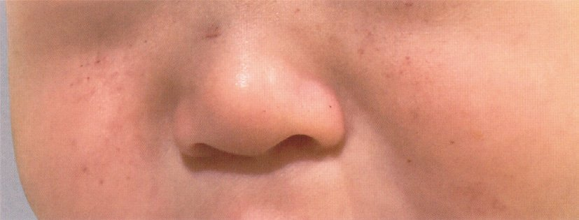
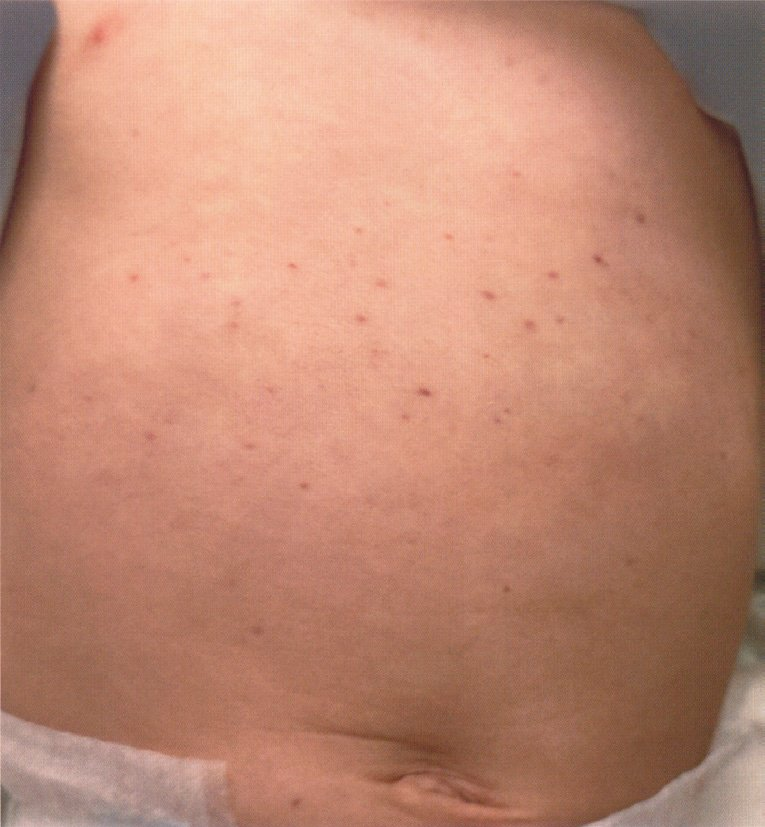
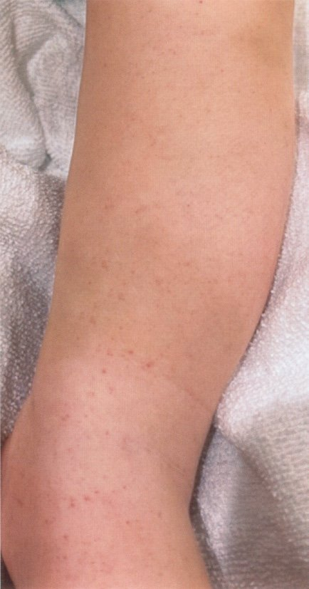
| 検査 | ITP | DIC（比較） |
|---|---|---|
| 血小板数 | ↓（単独） | ↓ |
| PT | 正常 | 延長 |
| APTT | 正常 | 延長 |
| フィブリノゲン | 正常 | ↓ |
| Dダイマー・FDP | 正常 | ↑ |
| 破砕赤血球 | なし | あり（TMAでも） |
| 疾患 | 脾摘の意義 |
|---|---|
| 温式AIHA（難治性） | 脾臓が主なIgG被覆RBCの破壊部位→脾摘で溶血↓ |
| ITP（難治性） | 脾臓で抗血小板抗体が産生（＋血小板破壊の場）→脾摘で血小板↑ |
| 悪性貧血 | 脾摘は不適（VB₁₂補充が主治療） |
| 赤芽球癆 | 免疫抑制療法・胸腺腫摘除が優先 |
| MDS | 通常脾摘は適応外（支持療法・アザシチジン等） |
| 選択肢 | VK欠乏時 | 解説 |
|---|---|---|
| a：FDP | 正常 | DICでFDP↑（VK欠乏でDICは来さない） |
| b：PT-INR | 上昇↑（異常高値） | PT延長→INR上昇（低値ではない） |
| c：PIVKA-II | 上昇↑ | VK欠乏→PIVKA-II（VK依存性因子の前駆体）が上昇→VK欠乏の指標 |
| d：ヘパプラスチンテスト | 低下↓（正解） | PT活性%→VK欠乏で低下 |
| e：APTT | 延長↑（異常高値） | APTT延長（低値ではない） |
| 疾患 | 血小板変化 | 解説 |
|---|---|---|
| 肝硬変 | ↓ | 脾機能亢進（血小板貯留・破壊）→血小板↓ |
| 血友病 | 正常 | 凝固因子欠乏→血小板数は影響なし |
| 真性多血症（PV） | ↑↑↑ | JAK2変異→骨髄増殖性→全血球増多（赤血球↑・WBC↑・血小板↑） |
| 多発性骨髄腫 | ↓ | 骨髄浸潤→造血抑制→血小板↓ |
| Glanzmann病 | 正常（機能異常） | 血小板数正常だが機能↓（血小板無力症） |
| DIC | ↓ | 消費性凝固障害→血小板↓ |
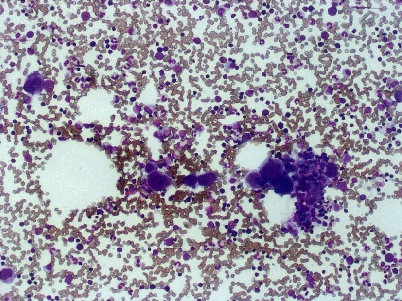
| 検査 | 変化 | 理由 |
|---|---|---|
| 血小板数 | ↓ | 消費性凝固→血小板が消費される |
| PT・APTT | 延長 | 凝固因子の消費・消耗 |
| フィブリノゲン | ↓ | 消費性凝固→フィブリノゲン消費 |
| FDP・Dダイマー | ↑ | 線溶亢進→フィブリン分解産物産生 |
| TAT（トロンビン・アンチトロンビン複合体） | ↑↑（診断的） | トロンビン産生の指標→DICの早期マーカー |
| 血清FDP（b選択肢） | ↑（高値） | 「低値」は誤り |
| 選択肢 | ○× | 解説 |
|---|---|---|
| a：骨髄巨核球数が減少 | ❌ | ITPでは巨核球は正常〜増加（血小板産生は正常→末梢での破壊が問題） |
| b：巨大脾腫を認める | ❌ | ITPでは脾腫は軽度（あっても軽微）→巨大脾腫はCML・PMF |
| c：血小板寿命短縮 | ✅ | 抗血小板IgG抗体→脾臓マクロファージが血小板を破壊→寿命（正常7〜10日）が数時間〜1日に短縮 |
| d：凝固時間正常 | ✅ | ITPは一次止血障害→PT・APTT正常（凝固系は無関係） |
| e：ステロイド有効 | ✅ | 第一選択治療（Fcγ受容体阻害・抗体産生↓） |
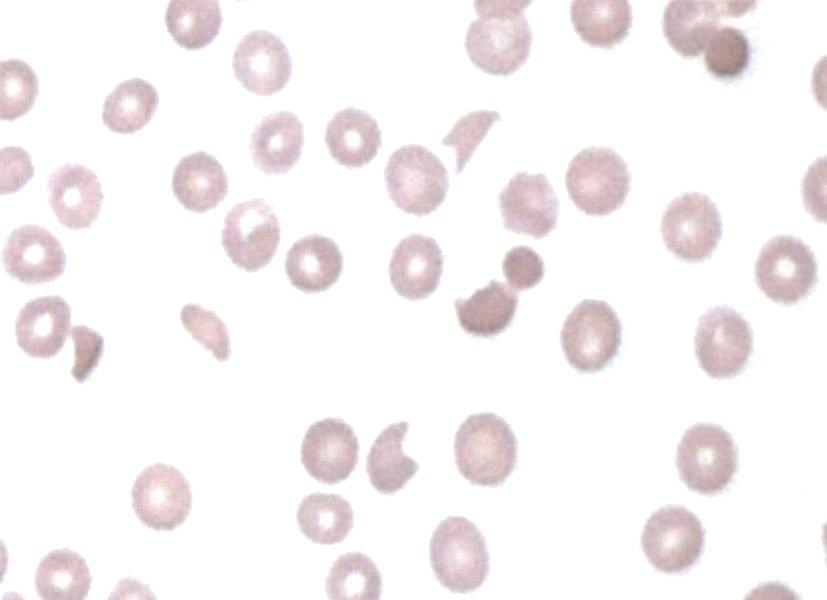
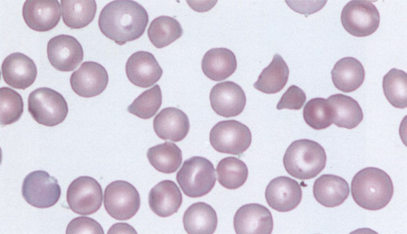
| 選択肢 | ○× | 解説 |
|---|---|---|
| a：先天性疾患 | ❌ | ITPは後天性の自己免疫疾患 |
| b：骨髄巨核球が減少 | ❌ | ITPでは巨核球は正常〜増加（血小板産生は正常→末梢破壊が問題） |
| c：皮下出血を起こしやすい | ✅ | 血小板↓→一次止血障害→点状出血・紫斑・皮下出血 |
| d：関節内出血を起こしやすい | ❌ | 関節内出血は血友病（二次止血障害）の特徴 |
| e：筋肉内出血を起こしやすい | ❌ | 筋肉内出血は血友病（二次止血障害）の特徴 |
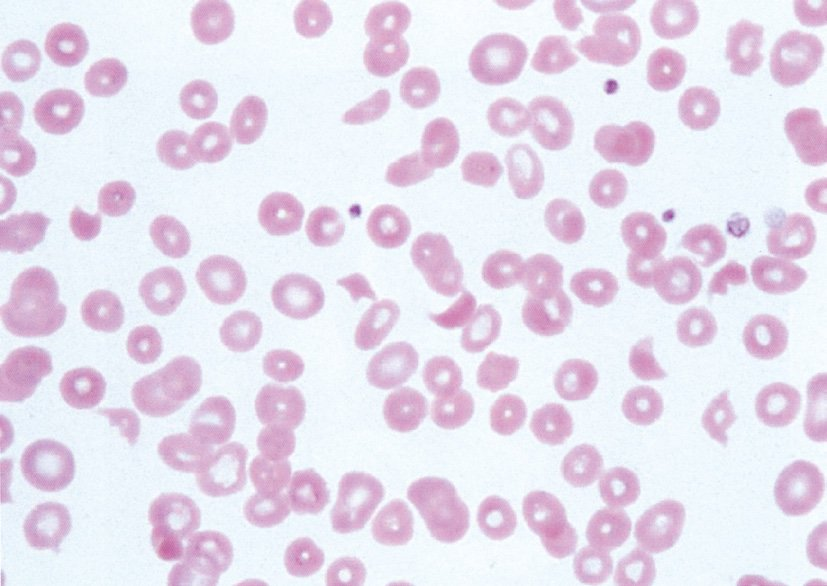
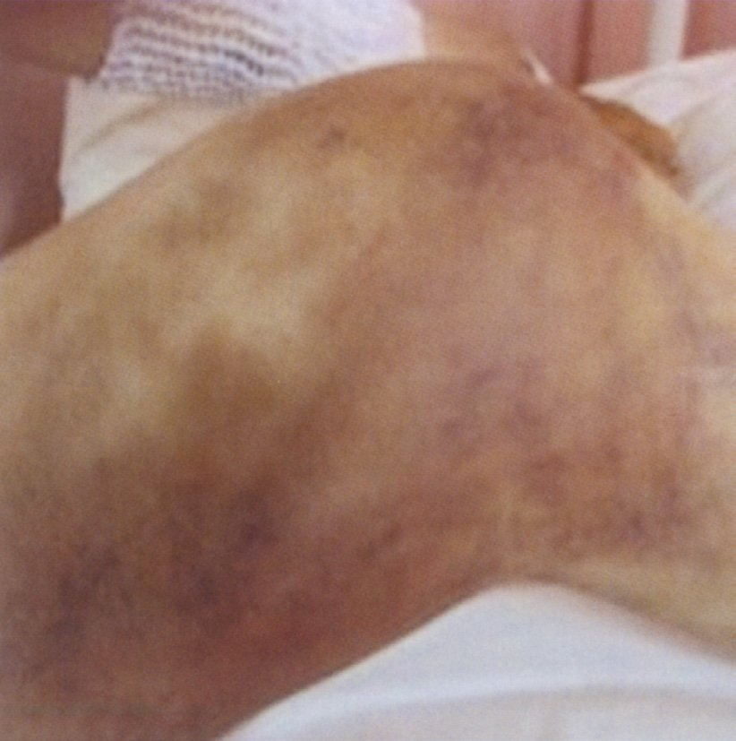
| 選択肢 | ○× | 解説 |
|---|---|---|
| a：抗菌薬が有効 | ❌ | O157（STEC）へ抗菌薬→Stx産生↑→HUS悪化リスク→禁忌 |
| b：点滴で治療開始 | ✅ | HUSの基本治療は補液（水分・電解質補正） |
| c：脳に障害が出ることがある | ✅ | HUS合併症：神経合併症（痙攣・脳症・意識障害）が10〜20%に |
| d：病原菌の毒素が原因 | ✅ | O157産生Stx（ベロ毒素）が腎微小血管内皮に結合→TMA |
| e：ほとんどが透析必要 | ❌ | HUSの透析必要例は重症例の一部（多くは補液で回復） |
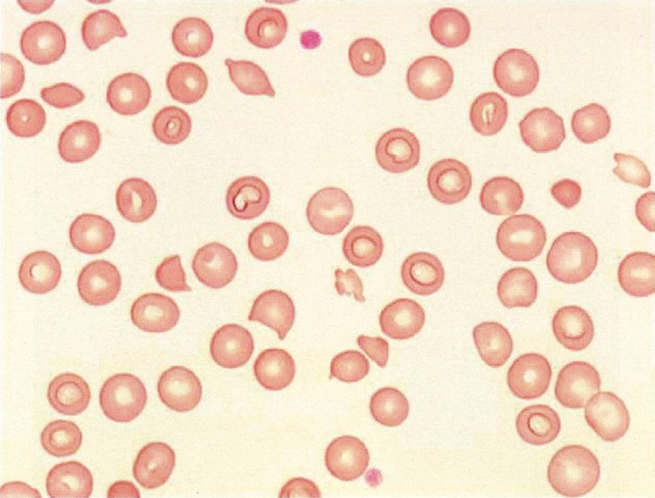
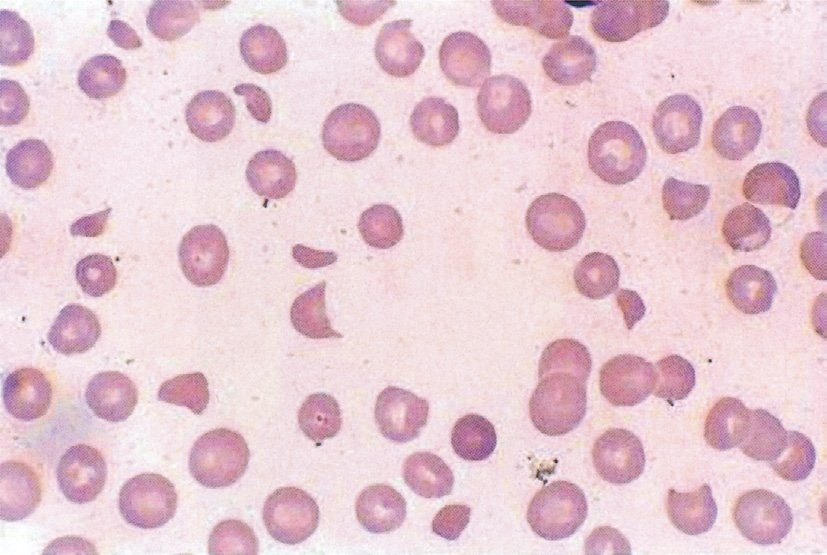
| 機序 | 疾患 |
|---|---|
| 破壊亢進 | ITP（免疫性）・TTP・HUS（TMA性）・DIC（消費性） |
| 産生低下 | AA・MDS・白血病・化学療法後・VB₁₂欠乏 |
| 分布異常（脾臓への貯留） | 肝硬変・脾腫（脾機能亢進） |
| 希釈（大量輸血後） | 大量輸血後（血漿成分の希釈） |
| 検査 | 血友病A | 解説 |
|---|---|---|
| 出血時間 | 正常 | 血小板一次止血は正常（vWDで延長） |
| PT | 正常 | 外因系凝固（VII→X→II）は正常 |
| APTT | ↑（延長） | 内因系凝固（XII→XI→IX→VIII→X→II）でVIII因子が欠乏 |
| 血小板凝集能 | 正常 | 血小板機能は正常 |
| 血小板粘着能 | 正常 | vWFは正常（血友病Aではvが関与しない） |
| 検査 | 血友病A | vWD |
|---|---|---|
| 出血時間 | 正常 | ↑（延長）：一次止血障害 |
| APTT | ↑（延長） | ↑（延長） |
| PT | 正常 | 正常 |
| 血小板数 | 正常 | 正常 |
| 血小板粘着能 | 正常 | ↓（vWF欠乏） |
| 第VIII因子活性 | ↓↓↓（直接欠乏） | ↓（vWF担体機能↓） |
| 遺伝形式 | X連鎖劣性（男性に多い） | 常染色体優性（男女ともに） |
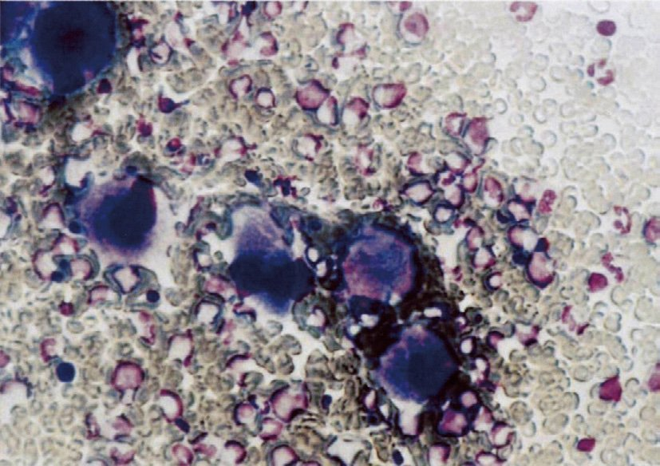
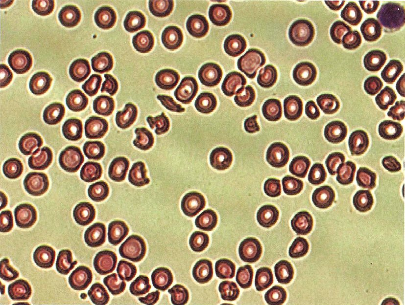